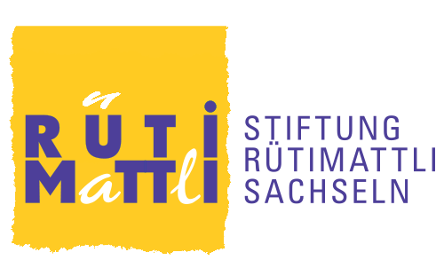

Ausgewählte, natürliche Rohstoffe
Wir verzichten auf Konservierungsstoffe, Glutamat, Geschmacksverstärker, chemische Zusatz- und Farbstoffe und E-Nummern.
Über uns
FoodKreator entwickelt und produziert Lebensmittel für Firmen und Privatpersonen. Unsere eigene Gewürzlinie heisst Redline.
Wer Ihr Produkt entwickelt
Ihr Produkt entwickelt ein Koch.
Simon Keller ist gelernter Koch und Inhaber von FoodKreator. Die rund 100 Mischungen unserer Gewürzlinie Redline hat er selbst entwickelt, aus Recherche und Erfahrung. Genau so geht er auch an Ihre Idee heran: mit dem Geschmack zuerst.
Unser Grundsatz: Geht nicht, gibts nicht.
Mit dem Team «Redline Chläggi Brutzler» war er an der BBQ-Weltmeisterschaft dabei.
Wofür wir stehen
Wir verzichten auf Konservierungsstoffe, Glutamat, Geschmacksverstärker, chemische Zusatz- und Farbstoffe und E-Nummern.
Unsere Gewürzmischungen verzichten soweit möglich auf Allergene wie Nüsse, Sellerie und Soja. Und auf Wunsch auf Schärfe, zum Beispiel bei Thai Currys.
Dieser Grundsatz führt uns immer wieder in neue Gebiete der Ernährung und zu überraschenden Seiten der Esskultur.
Produktion mit der Stiftung Rütimattli
Abgefüllt, verpackt und verschickt wird in Zusammenarbeit mit der Stiftung Rütimattli. Menschen mit körperlicher oder geistiger Beeinträchtigung erhalten so einen Arbeitsplatz mit fairen Rahmenbedingungen.
Stiftung Rütimattli, Rütimattli 4, 6072 Sachseln, 041 666 52 52

Eigene Produktlinien
Produkte, die wir für Kunden entwickeln, sind nicht Teil dieses Sortiments.
Über 100 Mischungen mit internationalen Geschmackswelten, für Detailhandel, Gastronomie und zu Hause.
Von klassischen Mischungen bis zu eigenen Linien, mit Fokus auf Geschmack, Haltbarkeit und Verkaufsformat.
Von der Rezeptidee über das Branding bis zur marktfähigen Verpackung. Einzelprodukte, Editionen oder Aktionen.
Haben Sie eine Idee für ein eigenes Produkt?
Idee besprechen